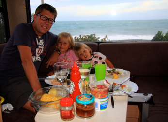
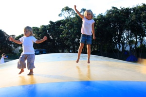

Napier

Jydens flugt
fredag den 22. februar 2008

Er hele hovedlandets befolkning flygtet på camperferie til New Zealand ? Halloooo er der overhovedet nogen tilbage - vi er meget i tvivl. Et eksempel : Færgen fra Sydøen, her er mindst 20 jyder, 1. dag camping familie med 3 børn, 2. dag camping i camper ved siden af jydsk familie med 3 børn, parkeringsplads i Wellington - jydsk familie med 4 børn. Og det er jo bare dem vi har mødt på 3 dage. Vi er til gengæld kun stødt ind i 6 sjællændere indtil videre. Har sjællænderne sat sig for hårdt i deres huse, prioriterer de anderledes eller er det et rent tilfælde? Statistisk er ikke min stærke side, så det vil jeg overlade til Tim at regne ud, men vi undrer os lidt.

New Zealænderne er jo outdoor folk, så legepladserne er såkaldte “Adventure” legepladser. Det betyder kort sagt, noget med en masse armgang højt oppe. Ikke lige noget for 2 årige. Stella er blevet så modig nu, at hun gladelig vandrer hen over nogle rør 2 meter oppe i luften, uden sikkerhed under. Adgangen til rutsjebanen er en klatremur, så der er ingen mulighed for lige at sidde på en bænk og kigge avisen igennem - hvad blev der af en god gammeldags sandkasse, spørger vi bare ?
Nå, men en dag har vi tilbragt på campingpladsen, da jeg trængte til et hvil. I dag har vi været på Te Papa museet i Auckland. Museet fortæller om New Zealands historie, natur og kultur. Det er et rigtig spændende museum, hvor vi sagtens kunne have tilbragt en hel dag. Der er mange børnerum med forskellige aktiviteter : Trommespil, mulighed for at kigge på ting i mikroskop, masser af store skelletter fra hvaler, en gammeldags købmandsbutik osv.
Jeg nåede at få lidt indblik i New Zealands geologi. Landet ligger placeret i “The Pacific Ring of Fire” et cirkleformet område i Stillehavet hvor kontinentalpladerne gnider mod hinanden, og derved skaber jordskælv og vulkanudbrud. Vi nærmer os aktive vulkaner og termiske områder, der bliver spændende at se.
Efter frokost i camperen, er vi kørt mod Napier på østkysten. Lidt udenfor programmet, men det eneste sted, hvor vejrudsigten var lovende. Efter 4 timers kørsel er vi endt i hård kuling på en plads lige ned til vandet. Vinden rusker i vognen, jeg håber den holder alle 4 hjul på jorden til i morgen.
Forresten har vi jo måtte slippe vores yndlingsavis “The Press” da vi har forladt Sydøen, den savner vi. Nu er vi gået gået over til “Dominian Post” Her handler en af forsidehistorierne om en Tom Jones koncert, hvor man har indført grænser for hvor meget alkohol gæsterne må medbringe. Det har vakt furore, at man kun må tage følgende med : 2 flasker vin (koncerten afholdes på en vingård) eller 12 dåser øl eller 10 premixede drinks. Måske skal der mere til for at nyde koncerten ?
Nu har vi fodret kaniner og hoppet på trampolin til natten er faldet på.
/Camilla
Så er der middag med vores flotte havudsigt i Napier.